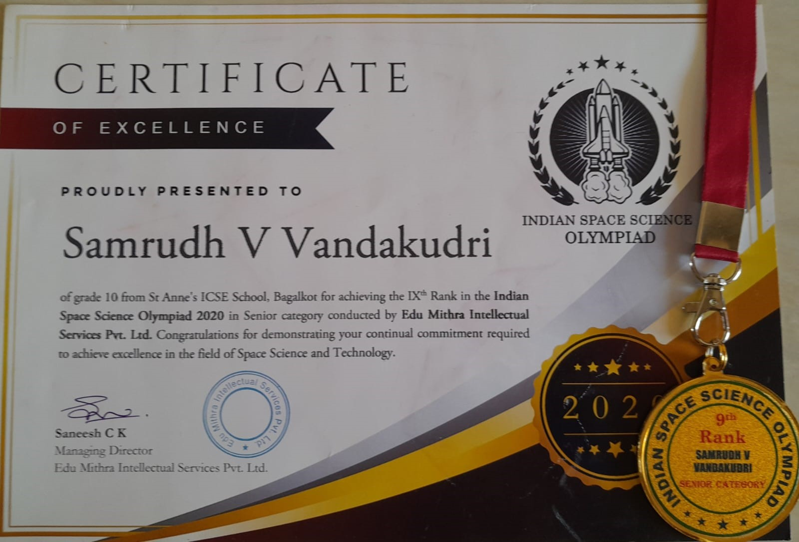
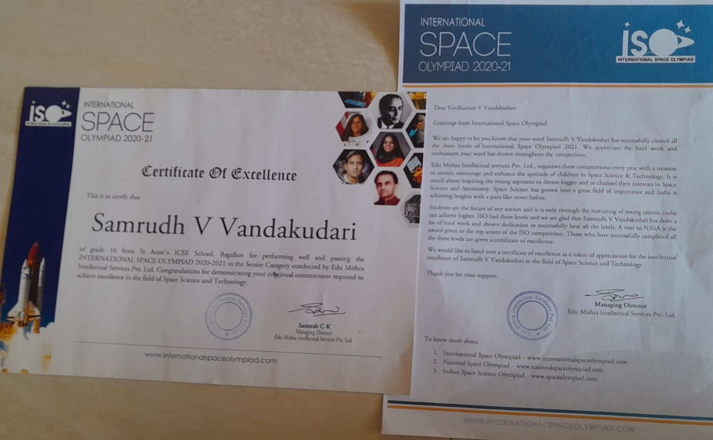
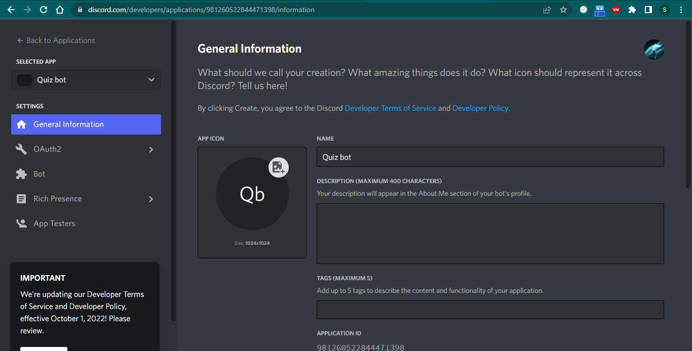

✷ It's my 10th markscard. My one of the greatest satisfaction
✷ This is my 12th predective midterms socrecard. I aim more than this in final boards.
✷ IELTS Score.
✷ This is the certificate of Indian Space Science Olympiad(ISSO). I have secued 9thrank across India. It was conducted by edumithra. Actually other than computer science, I love physics mainly modern physics in which Astronomy is my favourite subject.
 ✷ The certificate beside is of International Space Olympiad(ISO). I had secured 15th rank across globe. A participation certificate with a letter is attached.
✷ I have participated in many other Olympiads including NTSE,etc. I have participated in some of the coding competition conducted by Newton School, Codechef,etc. And even Talent Search exams you can see the certificates given in beloow link.Click here
✷ I have participated in many sports contests held in our schools. I love playing football. You can access my certificates below-: Click here
✷ I have even completed many online courses regarding computer tech on platforms like GreatLearning, Udemy, etc. Completeion certificates can be viewed by clicking below. At present, still I am learning few courses. Click here
✷ I have even participated in some of Drawing competitions held at our school. Click here to view certificates
✷ I have been to some of the workshops conducted in my locality. Certificates
✷ I have coded a game in python. It's a local game which we used to play in school. I have attached the text file of code below. Code
✷ Currently I am working on a discord bot. I am attaching a screenschot of the bot application on discord development portal.
And lastly the website which you are surfing is created and designed by me. You contact me for codes of the webpage. Click here to message me